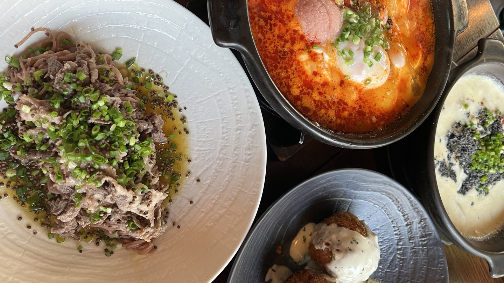
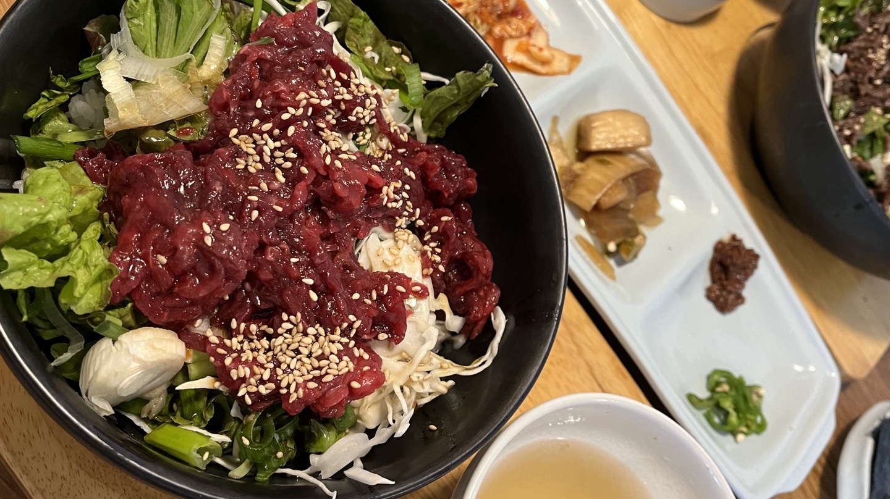
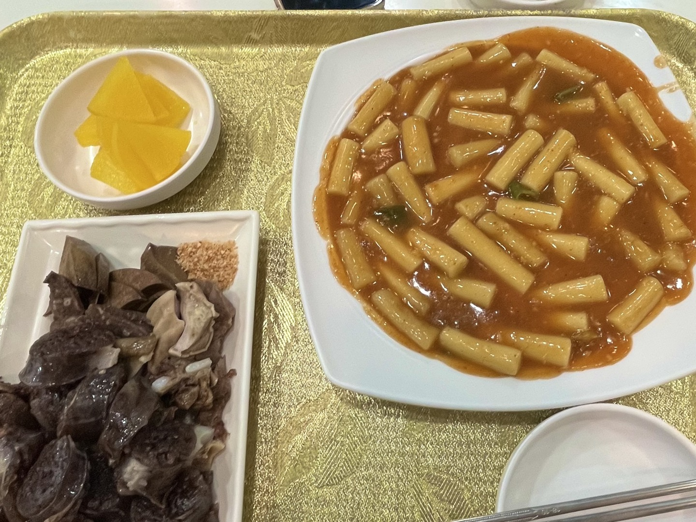
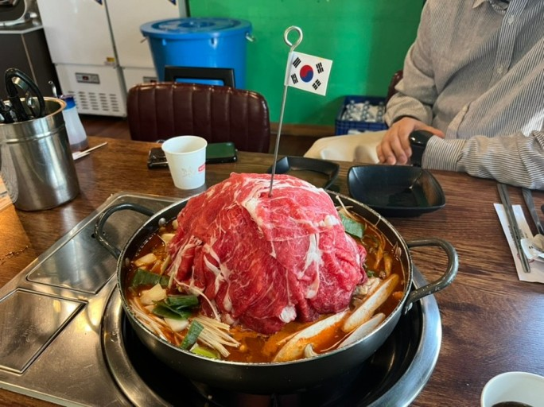

자극적이지 않고 깔끔한 한식
오이지
 |
 | ||
| 서울 종로구 대학로9길 33 | |||
혜화에 위치한 오이지는 분위기 좋은 퓨전 한식집입니다. 전체적으로 깔끔한 맛이 특징입니다. 제가 추천하는 메뉴는 차돌 들기름 국수, 명란 치즈 순두부, 흑임자 크림 수제비입니다. 차돌 들기름 국수-11,500원 명란 치즈 순두부-13,000원 흑임자 크림 수제비-12,300원
|
|||
| 안국 고다
|
 | |
| 서울 종로구 인사동14길 10 1층 | ||
인사동에 위치한 안국 고다는 육회 비빔밥 맛집입니다. 육회를 못 드신다면 불고기 비빔밥을 추천드립니다. 특별한 소스 없이도 간이 잘 잡혀있어서 너무나 맛있어요! 같이 나오는 곰탕과도 조화가 정말 좋습니다. 육회 비빔밥-14,000원 육회 많이 비빔밥-24,000원 불고기 비빔밥-16,000원
|
||
| 셀프하우스
|
 | |
| 서울 강동구 올림픽로 572 코오롱 2차 아파트 101동 107호 | ||
여러분 떡볶이 좋아하세요? 저는 너무너무너무너무너무 좋아하는데요! 이곳, 셀프하우스는 제가 중학교, 고등학교 다니면서 정말 많이 다녔던 찐! 맛집입니다. 티비 프로그램에도 나오면서 점점 유명한 가게가 되었죠. 마늘향이 떡볶이와 너무 잘 어울리며, 걸쭉한 소스가 진짜 중독적이랍니다. 마늘떡볶이-(소) 2,500원/(중) 3,500원/(대) 6,000원 찹쌀순대-4,500원 어묵꼬치-500원
|
||
| 연남 물갈비
|
 | |
| 서울 마포구 동교로25길 37 1층 | ||
비주얼부터 압도적인 이곳은! 바로 연남 물갈비입니다. 물갈비라니, 신기하죠? 저도 처음 봤는데 부드러운 등갈비가 잔뜩 쌓인 전골이에요. 산더미처럼 쌓여진 고기 위에 태극기를 꽂아주셔서 귀엽게 포인트가 된답니다. 다 먹고 후식으로 볶음밥까지, 아시요? 정말 한 끼 든든히 먹고 싶을 때, 추천합니다! 연남 물갈비-(1인분) 18,000원 연남 소불고기(1인분)-18,000원 볶음밥-3000원
|
||